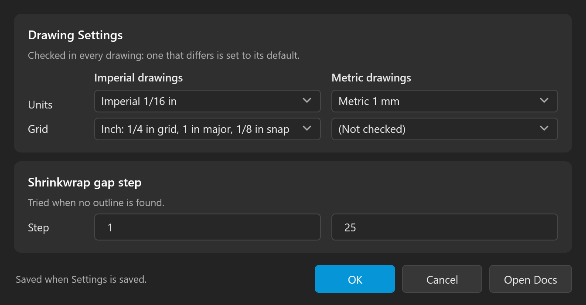

Paramètres
| Syntaxe | DYL-SETTINGS |
| Requis | AutoCAD 2025 ou plus récent pour Windows, avec le plug-in des fenêtres de DynALisp |
| Licence | Licence publique générale GNU v3 |
Description
DYL-SETTINGS ouvre la fenêtre Settings de DynALisp : la langue de DynALisp, les réacteurs, qui agissent sur les objets pendant que vous dessinez, les dérogations, que DynALisp applique à chaque dessin ouvert, et les mises à jour de DynALisp. Chaque interrupteur est désactivé à une nouvelle installation; une fois activé, il est mémorisé (un paramètre utilisateur Windows, Dynalisp*) pour tous les dessins et toutes les sessions. Save applique et enregistre les changements, Cancel les annule, Open Docs ouvre cette page.
Un paramètre accompagné d'un bouton carré ouvrir a sa propre fenêtre; le bouton est grisé tant que le paramètre est désactivé (ou quand le programme dont il a besoin n'est pas chargé). Chaque paramètre activé ou désactivé est un interrupteur, sa courte description en dessous; la fenêtre prend les couleurs du thème clair ou foncé d'AutoCAD (voir Fenêtres).
Les libellés des fenêtres de DynALisp sont en anglais : cette page les cite tels qu'ils apparaissent.

Utilisation
- Tapez Dyl-Settings (ou cliquez Paramètres dans le groupe de fonctions DynALisp du ruban).
- Activez les interrupteurs de ce que DynALisp doit faire pour vous; un bouton ouvrir carré à côté d'un réglage ouvre sa propre fenêtre.
- Cliquez Save : les réglages s'appliquent à chaque dessin, ceux qui sont ouverts quand vous y revenez.
Environnement (Environment)
La langue dans laquelle s'ouvrent ses docs.
| Paramètre | Ce qu'il fait |
|---|---|
| Language | English ou French : la langue dans laquelle s'ouvrent les docs de DynALisp (les boutons Open Docs, Dyl-Docs, les docs de Dyl-Suite), l'anglais pour une page pas encore traduite; le sélecteur EN | FR en haut à droite de chaque page change la langue de la page affichée. Il ne change rien d'autre : l'onglet DynALisp du ruban, les noms des phases (barre d'état, Layer Phase) et les descriptions des listes de Layer Transfer sont toujours dans la langue de l'AutoCAD installé. Tant qu'il n'est pas enregistré, la langue de l'AutoCAD installé (l'anglais pour une langue que DynALisp n'a pas encore). Ce n'est pas la langue (Language) des File Preferences, qui règle les dossiers de contenu et les dictionnaires des dessins. |
Réacteurs (Reactors)
Agissent sur les nouveaux objets pendant que vous dessinez. Les réacteurs sont dans le dossier Reactor de chaque module.
| Paramètre | Ce qu'il fait |
|---|---|
| DynALisp reactors | L'interrupteur général. Désactivé, les dossiers Reactor ne sont pas chargés du tout et aucun réacteur ne tourne (les paramètres de réacteurs ci-dessous sont grisés). À sa désactivation, les réacteurs des dessins ouverts sont retirés. |
| Auto-phase new objects | Place les nouveaux objets sur le calque de la phase active (Layer Phase, PH-AUTO). Son bouton ouvre Layer Phase. |
| Auto layer keys | Place les nouvelles cotes, lignes de repère, textes, tableaux et autres objets courants créés par une commande sur la clé de calque de leur type (Object Layer Keys). Son bouton ouvre Object Layer Keys. |
| Auto draw order | Empile les nouveaux objets selon le niveau de leur calque (Draw Order). Son bouton ouvre Draw Order. |
| Settings sync | Les autres dessins ouverts suivent les paramètres enregistrés ici lorsqu'ils deviennent courants (seul ce qui a changé est appliqué). Désactivé, un paramètre s'applique au dessin où il est changé et aux dessins ouverts ensuite. |
Dérogations (Overrides)
Appliquées à chaque dessin ouvert.
| Paramètre | Ce qu'il fait |
|---|---|
| Drawing Settings | Chaque dessin ouvert est comparé aux unités et à la grille par défaut de son type (impérial ou métrique); un dessin qui en diffère y est ramené. Son bouton ouvre la fenêtre Drawing Settings, offerte même quand la vérification est désactivée (pour le pas d'écart de Shrinkwrap). |
| Commands | Redéfinit les commandes d'enregistrement et d'impression ainsi que REGEN (Command Optimizer) pour qu'elles préparent d'abord le dessin. Son bouton ouvre la fenêtre Output Prep (Prep Drawing, aussi DYL-PREPSUITE) : les étapes exécutées avant chaque commande. |
| File Preferences | Le profil DynALisp : les chemins d'AutoCAD réglés selon la classification de la bibliothèque AEC, les unités de dessin et la langue. Son bouton ouvre la fenêtre File Preferences (Set File Preferences). |
| System variables | Les valeurs préférées du profil de variables système actif, et les variables protégées, appliquées à chaque dessin ouvert (System Variables). Son bouton ouvre Dyl-SysVars. |
| Display | Les paramètres d'affichage appliqués à chaque dessin ouvert. Son bouton ouvre la fenêtre Display. |
| Revisions | Chaque feuille d'un projet du Navigateur de projets est mise à jour avec les révisions du projet à son ouverture : ses cartouches et ses étiquettes de révision (voir Revisions). Son bouton ouvre la fenêtre Revision Title Blocks. Grisé quand Dyl-Revisions est désactivé. |
| Clean startup | Une fois AutoCAD démarré, les lignes qu'il a affichées au démarrage (Loading AEC..., Customization file loaded successfully, les palettes et les commandes de démarrage de l'espace de travail...) sont retirées de la ligne de commande. Conservées : la ligne Drawing created using..., les lignes de DynALisp et toute ligne qui signale une erreur ou un avertissement. S'applique au prochain démarrage. Grisé dans une version antérieure à 2015. Voir Démarrage épuré. |
Clés de calque (Layer Keys)
Calques existants qui diffèrent de leur clé.
| Paramètre | Ce qu'il fait |
|---|---|
| Update them without asking | Un calque d'une clé de calque qui existe dans le dessin avec une couleur, un type de ligne, une épaisseur de ligne ou un réglage de traçage autre que celui de sa clé est mis à jour selon sa clé, sans le demander (Layer Keys). |
| Keep them without asking | Un tel calque est utilisé tel quel, sans le demander. |
L'un des deux au plus (en activer un désactive l'autre). Les deux désactivés, par défaut : la question vous est posée, une fois par calque et par session. Remember my answer and do not ask again dans cette question active l'un d'eux pour vous; désactivez-le ici pour que la question soit posée de nouveau.
Assistant
Ce que Claude peut faire dans le dessin.
| Paramètre | Ce qu'il fait |
|---|---|
| Allow Lisp | L'Assistant peut exécuter du code AutoLISP dans le dessin, pour ce que ses autres outils ne font pas. Chaque code est montré en entier sur une carte de la palette, et ne s'exécute qu'une fois que vous cliquez sur Allow, chaque fois; un U annule ce qu'il change. Désactivé, par défaut : l'Assistant n'exécute jamais d'AutoLISP. Grisé quand le plugiciel de l'Assistant n'est pas chargé. |
Mises à jour (Updates)
Nouvelles versions de DynALisp.
| Paramètre | Ce qu'il fait |
|---|---|
| Install updates automatically | Une fois par jour, le premier dessin ouvert vérifie s'il existe une nouvelle version de DynALisp et lance son installation, qui s'effectue à la fermeture d'AutoCAD (Mises à jour). Désactivé, Dyl-Info vous signale qu'une nouvelle version est sortie. Grisé quand DynALisp est un clone git : mettez-le à jour avec git pull. |
Fenêtre Drawing Settings

- Units / Grid – pour les dessins impériaux et les dessins métriques, le préréglage d'unités (Set Units) et le préréglage de grille (Standard Grid) auxquels chaque dessin est comparé; (Not checked) le laisse tel quel.
- Shrinkwrap gap step – pour les dessins impériaux (1 par défaut) et métriques (25 par défaut), le pas dont Shrinkwrap augmente sa tolérance d'écart quand aucun contour n'est trouvé, jusqu'à 10 fois. Un nombre supérieur à 0, en unités de dessin. Utilisé même quand Drawing Settings est désactivé.
- Les valeurs sont enregistrées quand Settings est enregistré.
Fenêtre Display

- Interface – les couleurs de toute l'interface d'AutoCAD, tant qu'il est dans son thème foncé (le thème reste celui choisi dans AutoCAD) : DynALisp, le foncé des fenêtres DynALisp, ses gris dans leur gris-bleu et plus foncés; DynALisp Neutral, la même chose dans un gris neutre, plus foncé, sans le gris-bleu. Elle colore le ruban, les palettes (Propriétés, Palettes d'outils, Propriétés des calques...), la barre d'état, les onglets de fichiers, la barre de titre, la ligne de commande et l'onglet Démarrer, et règle à l'avenant l'arrière-plan de l'espace objet (#181B20 ou presque noir, #121212), le papier des présentations et l'arrière-plan autour, chacun avec un réticule qui reste lisible. Son bleu et les icônes restent tels quels. (Not set) : les couleurs d'AutoCAD. Un essai, qu'Autodesk ne prend pas en charge : une autre version d'AutoCAD peut ne pas tout accepter, et ce qu'elle n'atteint pas garde les couleurs d'AutoCAD. La palette Propriétés est dessinée par AutoCAD lui-même, en C++ : DynALisp retrouve ses couleurs dans AutoCAD, et la laisse telle quelle s'il ne les trouve pas. AutoCAD peut ne redessiner une palette qu'une fois réaffichée.
- Model space – l'arrière-plan de l'espace objet à la place de celui de l'Interface, le reste de l'interface laissé tel quel : Black, Default (gris-bleu foncé, RVB 33,40,48, celui d'AutoCAD à l'installation) ou White, avec un réticule qui reste lisible; (Not set) : celui de l'Interface, ou inchangé quand l'Interface n'est pas choisie.
- Layouts – le papier des présentations à la place de celui de l'Interface : White (comme AutoCAD à l'installation) ou Black, avec son réticule; l'arrière-plan autour du papier reste celui de l'Interface. (Not set) : celui de l'Interface, ou inchangé. L'arrière-plan autour du papier peut ne changer qu'une fois la présentation affichée de nouveau, ou AutoCAD redémarré.
- Par exemple, DynALisp Neutral pour l'Interface et Black pour Model space : un espace objet noir pur dans l'interface gris neutre; White pour Layouts garde le papier blanc.
- Enregistré quand Settings est enregistré.